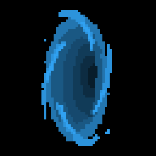

<!DOCTYPE html>
<html lang="en">
<head>
    <meta charset="UTF-8">
    <meta name="viewport" content="width=device-width, initial-scale=1.0">
    <title>Variaveis</title>
</head>
<body>
    
    <script>
        //Declaração de variáveis
        // var é o tipo de variável super global
        var nome; //Declaração da variavel vazia
        
        //const é o tipo de constante
        const registro = '000.202.333-1';
        
        //let variavel de escopo local
        let idade;

        //declaração múltiplas
        let sala, turma, aluno;
        var num1 = 3, num2 = 6, num3 = 9;

        //Atribuindo valor ás variaveis
        nome = 'Helder'; //Utilizamos o sinal de igualdade depois de nome de variável
        console.log(nome);

        nome = 'oliveira'; //È possivel reatribuir valores para variaveis
        console.log(nome);

        //Acessando árvore do DOM   e seus Method (métodos)

      /*   window.document.write('<h1>');

        window.document.write('Salveeee totoso');

        window.document.write('</h1>');

        

        document.write('Aqui tem uma constante: ' + registro + '<br>');
        //registro é uma constante onde não é possivel alterar seu valor
          registro = 'mudado';  não é posivel realizar essa mudança'
        document.write('Mudamos a constante para: ' + registro + '<br>'); */


        nome = prompt('Diga seu nome aee');
        idade = prompt('e sua idade pae qual é?')

        //convertendo string para number
        let idadeconvertida = parseInt(idade)

        document.write( '<h2>' + 'Salve ' + nome + '!' + '</h2>');
        document.write( '<p>' );
        document.write( nome + ', você tem: ' + idade + 'anos' + '<br>');
        //inserindo imagem
        document.write('<br>')
        document.write('' );
        document.write('<br>' + 'clique na imagem acima e descubra seu destino')
        
        
        
        //Exibido o tempo de vida
        let morte = idadeconvertida - ((num2 * idadeconvertida)/num3)+ num1;
        console.log(morte);
        
        document.write( '<p>' );
        
        //Detectando clique na imagem
        let imgclick = document.querySelector('.hole');
        imgclick.addEventListener('click', function futuro(){
            /* alert('Tudo certo parceiro') */

            const anosAtual = 2023;

            document.write('<br>' + '<br>' + '<br>' );
            document.write('<p>' + nome + ', apesar do seus ' + idade + 'anos ' + '<br>' );
            document.write('Ainda restam para você: ' + morte + 'anos de vida ' +  '<br>');
            document.write('Sendo Assim você bate as botas no ano de:' + (morte + anosAtual));


        });

        // Adivinhando o tempo de vida
       
        

    </script>
</body>
</html>